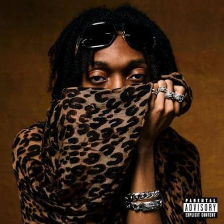

Mudd
17 y/o developer & 3D engine creator
I'm a backend developer and 3D game producer from Poland. I also started to learn x64 reverse engineering, but i found more interesting how a game engine works.
Currently working on DuniaToolKit and SableEngine.
Knowledge
Languages
- Go
- C++
- C#
- Python
Tools
- IDA Pro
- JetBrains dotPeek
- Fiddler Classic
- MongoDB
IDE's
- Visual Studio Code
- Visual Studio
- PyCharm
- GoLand

0:00
0:00
Projects
Offset finder
Offline offset finder with autoreport & confidence score
from 0-100.
C#
SableEngine
Sable Engine is an experimental Windows-first game engine built
with C++20 and Vulkan 1.3. It focuses on modern rendering,
real-time environments, first-person gameplay, and direct
low-level control over Vulkan.
C++ · CMake · Python · HLSL
Devoria
Shop made by 2 developers: Software, OGFN stuff, Cheats.